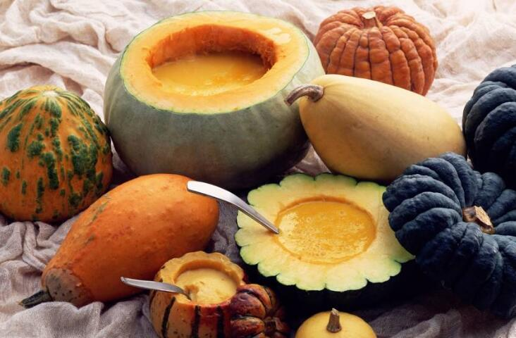

南瓜究竟源自于哪里？
关于南瓜的起源中心及相关问题，在早期研究的学者中颇有争议。随着考古工作的大量展开，美洲遗址不断地被发掘，南瓜遗存不断地被发现，南瓜起源的研究也揭开了新的篇章，随着中外学者研究的深入，南瓜的美洲起源说，逐渐成为一种主流学说。伴随着南瓜早期的栽培和利用，诞生了南瓜文化，南瓜通过“哥伦布大交换”传遍旧大陆。

南瓜起源于美洲
早在1882年，英国植物历史学家第康道尔的《农艺植物考源》一书中就考证了南瓜的起源，现将全文抄录如下：
北瓜，一名红南瓜，一名番瓜，学名 Cucurbita moschata Duchesne 。英名Musk或Melo Pumpkin。据园艺指南（ Bon Jardinier ）之记载，北瓜之变种有三de Provence，Pleine de naples，及de Barbarie。此皆因地而名，然不足依此而推知其原产地也。此种植物体被柔毛，叶之分裂甚浅或不分裂，果柄五角形基部略膨大，果实外被薄霜，果肉略带麝香气味，故易与南瓜分别。且其萼片先端常宽展为叶片状，亦一特点。热带地方多栽培之，但在温带地方则不及南瓜之普遍也。
科尼奥氏（Cogniawx）谓北瓜或系亚洲南部之特产，但是并无确鉴之证据。作者曾遍访新旧大陆各地之植物志，均无真正野生者之记载。较为近似者有下列诸地：（1）在亚洲之旁加岛（Bangka），科尼奥氏曾见有一标本，密开尔氏（Michel）谓非栽培之物；（2）在非洲之安哥拉（Angola）曾采得一标本，韦尔威赤氏（Welwitsch）谓系真野生者，但又谓或系外方所移入者；（3）在美洲、巴西、圭亚那、尼卡拉瓜等地曾采有标本五号，据科尼奥氏之意并不能断定其为栽培者、野生者，或栽培后芜生者，上列诸说均非有肯定之辞也。拉姆非乌斯、布芦万（Blume）、克拉克诸氏在印度植物志中，什淮恩孚特氏（Schweinfurth）在非洲热带植物志中均记北瓜为栽培之物。中国之有北瓜亦系近代事，美洲各地植物志中记载者甚少。
北瓜无梵文名称，印度、马来及中国之名称或失于繁冗，或由他名所转变，皆无可考，惟在亚洲南部较其他热带地方之分布确较为普遍也。马拉巴栽培植物志（Hortus Malabaricus）有一精美之北瓜图，据此可见十七世纪即有此物矣。塞林氏（Seringe）谓十六世纪达利沙姆氏（Dalechamp）之植物图解中亦有此物，然据作者所见该图并非与北瓜同为一物，故不可信。
 上一篇
上一篇